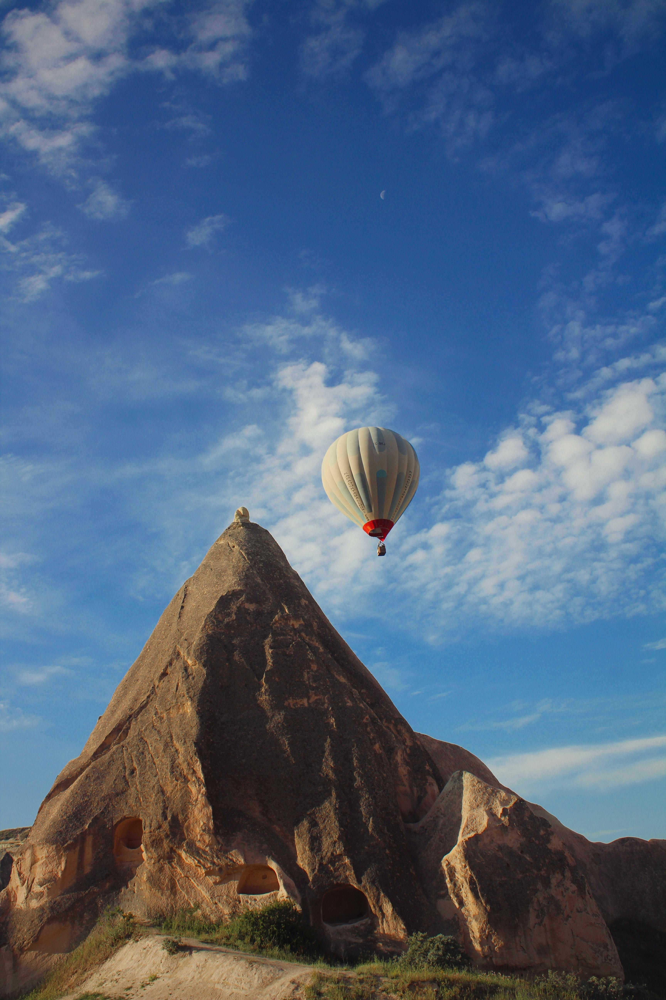
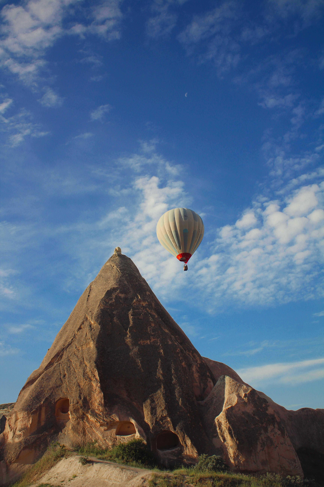
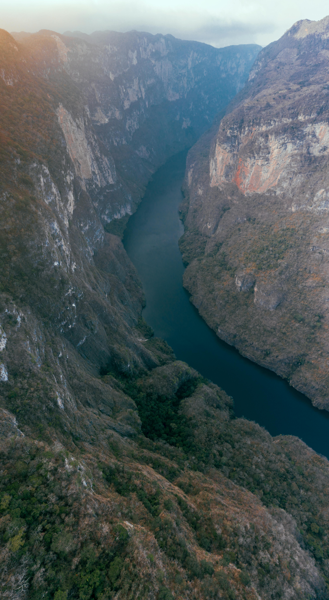
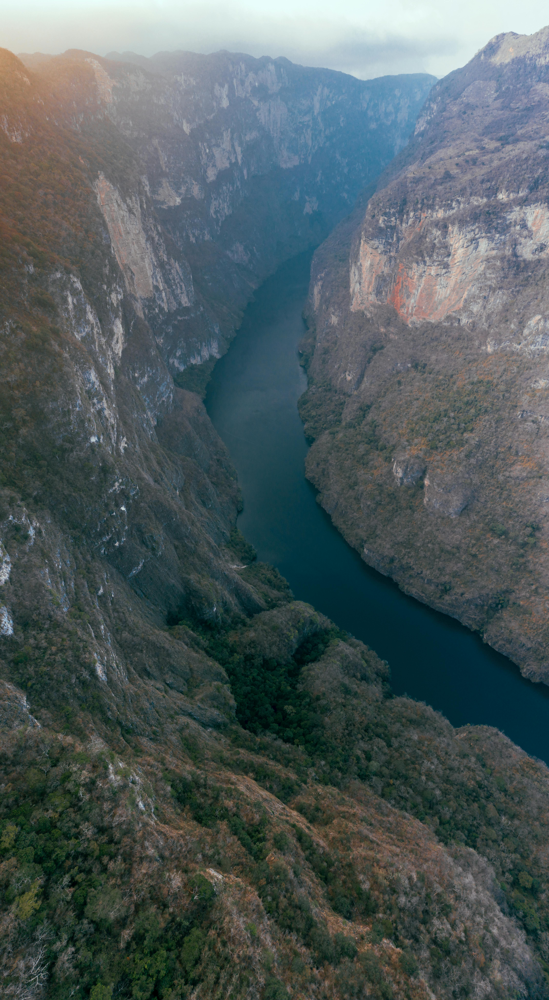

The Beauty of Turkey
Cappadocia, located in central Turkey, is famous for its unique fairy chimneys. These rock formations have been shaped by nature over thousands of years, creating a magical landscape.
- Balloon Rides: Witness the beauty of the chimneys from above during a breathtaking hot air balloon ride.
- Historical Sites: Visit ancient cave churches and underground cities that tell the region's rich history.
- Photography Opportunities: Capture the stunning scenery at sunrise or sunset for unforgettable memories.
- Hiking Trails: Explore the valleys surrounding the chimneys, such as Love Valley and Rose Valley.
 

For more information, visit GoTürkiye or explore more images.
The Magic of the Aurora Borealis
The Aurora Borealis, also known as the Northern Lights, is one of nature's most mesmerizing phenomena. This spectacular light show occurs near the Arctic Circle and attracts visitors from all over the world.
- Best Locations: Visit Norway, Iceland, Finland, or Sweden for the most stunning views.
- Timing Matters: Plan your trip between September and March, when the nights are longest.
- Clear Skies: Avoid cloudy nights and stay away from city lights for the best visibility.
- Stay Warm: Dress in layers and carry hot beverages, as the Arctic nights can be extremely cold.


Learn more from National Geographic or check out images here.
Exploring the Ancient City of Machu Picchu
Machu Picchu, nestled high in the Andes Mountains of Peru, is a UNESCO World Heritage Site and one of the New Seven Wonders of the World. It is an iconic symbol of the Inca civilization.
- The Sun Gate: Hike to the Sun Gate (Inti Punku) for a breathtaking view of the ancient city.
- Temple of the Sun: Discover the architectural brilliance of this sacred Inca temple.
- Huayna Picchu: Climb this iconic peak for panoramic views of the ruins and surrounding landscape.
- Inca Trail: Experience the journey by hiking the legendary Inca Trail to reach Machu Picchu.


Plan your trip with Peru Travel or explore more images.
The Grandeur of the Grand Canyon
Located in the state of Arizona, USA, the Grand Canyon is one of the world’s most awe-inspiring natural wonders. Its immense size and intricate layers of colorful rock tell a story that dates back millions of years.
- Hiking Trails: Discover breathtaking views along famous trails such as the Bright Angel Trail and South Kaibab Trail.
- River Rafting: Experience adventure with a rafting trip down the Colorado River, which flows through the canyon.
- Skywalk: Walk on the glass-bottomed Skywalk for an exhilarating perspective over the canyon.
- Sunrise and Sunset: Witness the canyon’s vibrant colors transform as the sun rises or sets over the horizon.
 

To plan your visit and learn more, check out:
National Park Service - Grand Canyon
Explore Photos